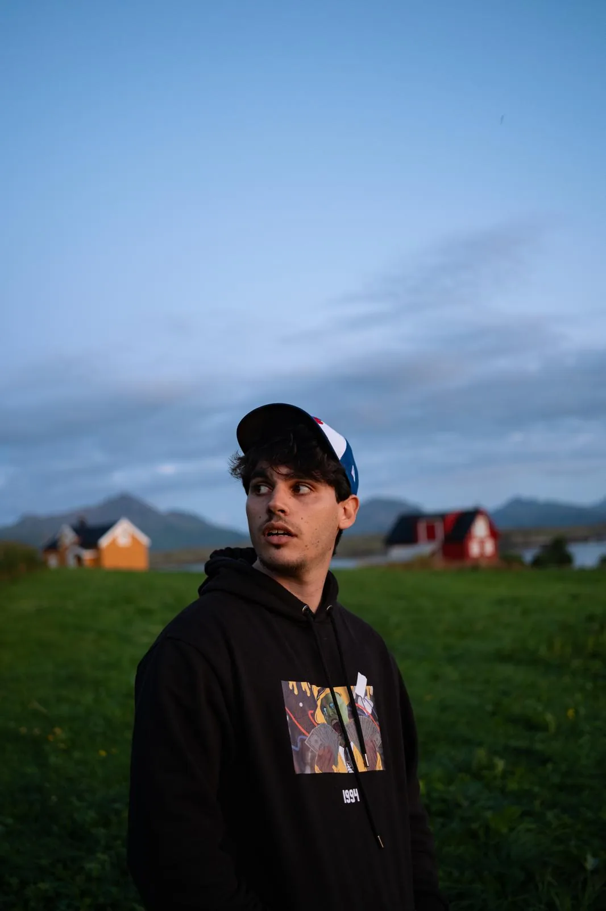
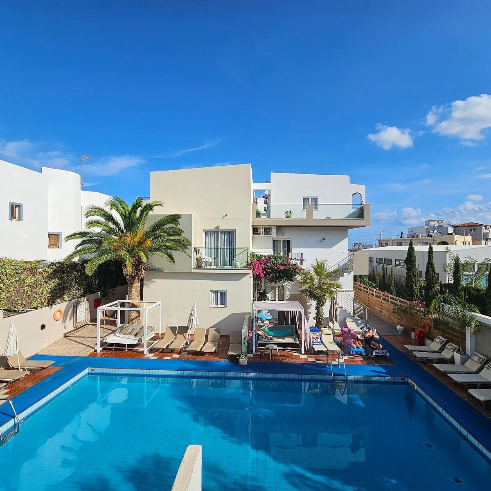

Egeo · Grecia
CRETE
3 giorni. 18 persone.
Una barca nella Baia di Mirabello
e le notti di Creta.

01 — Chi siamo
Ciao!
Sono Davide.
Questo sarà il mio sedicesimo viaggio come coordinatore WeRoad. L'obiettivo? Farvi vivere un weekend incredibile, conoscere persone fantastiche e portarvi nei posti migliori dell'isola.
Coordinatore esperto

Il cuore del weekend
Un giorno
in barca.
Sabato la Baia di Mirabello è tutta nostra. Crociera di quattro ore e mezza tra Spinalonga, la Grotta di Barbarossa e le cale di Kolokytha e Skistra. Drink di raki di benvenuto, giochi galleggianti, anguria a bordo e soste per nuotare nelle acque più trasparenti dell'isola. È già pagata: dovete solo salire.
- Spinalonga
- Grotta di Barbarossa
- Baia di Kolokytha
- Baia di Skistra
02 — Itinerario
Tre giorni,
scritti con calma.
Scegli il giorno — il programma cambia qui sotto.
03 — Voli
Andata & ritorno
Voli raggruppati per partenza: trova il tuo nome per sapere con chi viaggi. Hai un volo diverso? Scrivi a Davide.

04 — Dove dormiamo
Primavera
Beach Hotel
A Stalida, sulla costa orientale, a 25–35 minuti da Heraklion. Mare a portata di passeggiata e niente lunghi spostamenti: la base perfetta per un weekend.
- Stalis Beach · 1–5 min
- Malia Beach · 5–10 min
- Sarandaris · 15–20 min
- Potamos Beach · 20–30 min
05 — Rooming
Le camere,
in chiaro.
Chi dorme con chi. Diciotto viaggiatori più Davide, in 5 triple e 2 doppie.
06 — Come arrivare
Dall'aereo
al primo tuffo.
Transfer in gruppo
Raggruppati per orario d'arrivo a Heraklion. Van privato 90 € + IVA 24% = 111,60 € (fino a 15 pax, solo andata) · taxi ≈ 50 € (max 4 pax). Costi indicativi da dividere nel gruppo.
07 — Cassa comune
Cento euro,
zero pensieri.
La quota è fissata a 100 € a testa e copre anche la quota del coordinatore. Un fondo unico per le spese di gruppo: niente conti da dividere ogni volta. Quel che avanza, torna indietro.
- Quota del coordinatore (il suo viaggio, diviso tra noi)
- Tassa di soggiorno · 6 €
- Colazione in hotel · 18 € (2 giorni)
- Transfer di gruppo sull'isola
- Spese comuni di gruppo
- Voli, attività extra e spese personali (a parte)
08 — Cosa c'è dentro
Incluso & escluso
- Coordinatore WeRoad per tutto il weekend
- 2 notti al Primavera Beach Hotel
- Escursione in barca nella Baia di Mirabello
- Welcome drink & cena di arrivederci
- Itinerario curato giorno per giorno
- Assistenza sul posto
- Voli a/r
- Colazione · 18 € (nella cassa comune)
- Tassa di soggiorno & transfer (cassa comune)
- Pasti non indicati & attività opzionali
- Assicurazione & spese personali
09 — Attività extra
Da aggiungere,
se ti va.
10 — Lo zaino
Cosa mettere
in valigia.
Spunta mentre prepari. Resta salvato sul tuo telefono.
11 — Dove mangiare
A tavola,
come i cretesi.

12 — Le serate
La notte
è giovane.
Le serate sono metà del viaggio. Malia è il cuore della movida cretese: una sera per scaldare i motori, una per spingere fino all'alba.
Il giro di Malia
Otto locali sulla Beach Road, dal warm-up all'alba. Tocca quelli che ti ispirano e costruisci il tuo giro: resta salvato sul telefono.
Per chi vuole calma: aperitivo a Plaka con vista su Spinalonga, o beach bar al tramonto a due passi dall'hotel.
I nomi dei locali cambiano di stagione: chiedete sul posto la serata del momento.
13 — Il gruppo
Diciotto, presto amici.
I viaggiatori del gruppo. Sotto ogni nome, quanti viaggi WeRoad ha già fatto.
14 — Cielo
Meteo & sole

Si parte tra
Venerdì 10 luglio · ci vediamo al gate.
15 — Dubbi